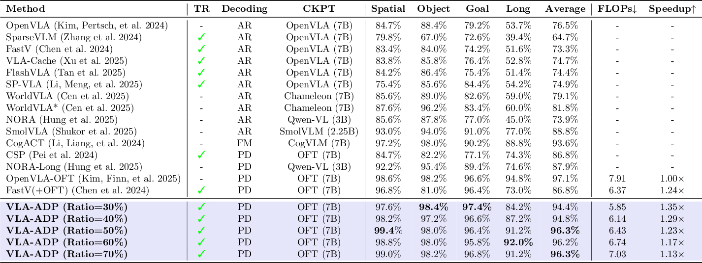
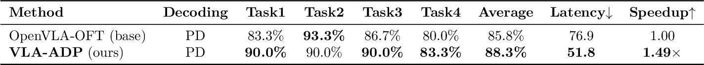
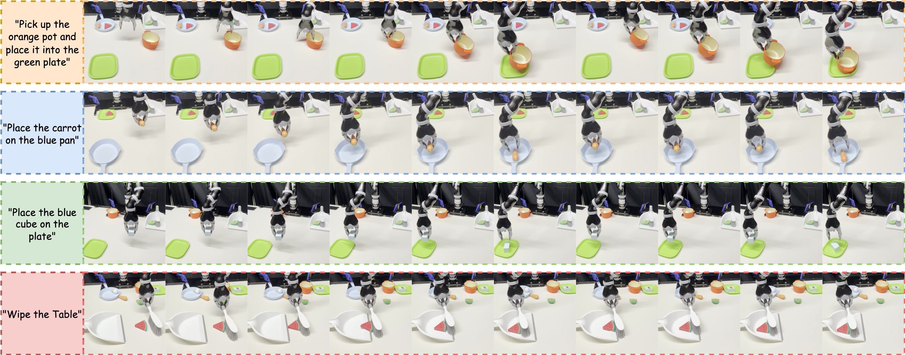

Experimental Results
Simulation Results (LIBERO Benchmark)

Comparison against OpenVLA, SparseVLM, FastVLM, and other VLA methods across four LIBERO task suites (Spatial, Object, Goal, Long). VLA-ADP achieves 94.4–99.0% SR with 1.13–1.35× LLM speedup.

LIBERO benchmark task suites used for simulation evaluation: Spatial, Object, Goal, and Long.
Real-World Results (ALOHA Robot)

VLA-ADP improves SR from 85.8% to 88.3% while reducing latency by 33% (76.9 → 51.8 ms), achieving a 1.49× speedup on real hardware.

Real-world experimental setup: bimanual ALOHA robot performing tabletop manipulation tasks.